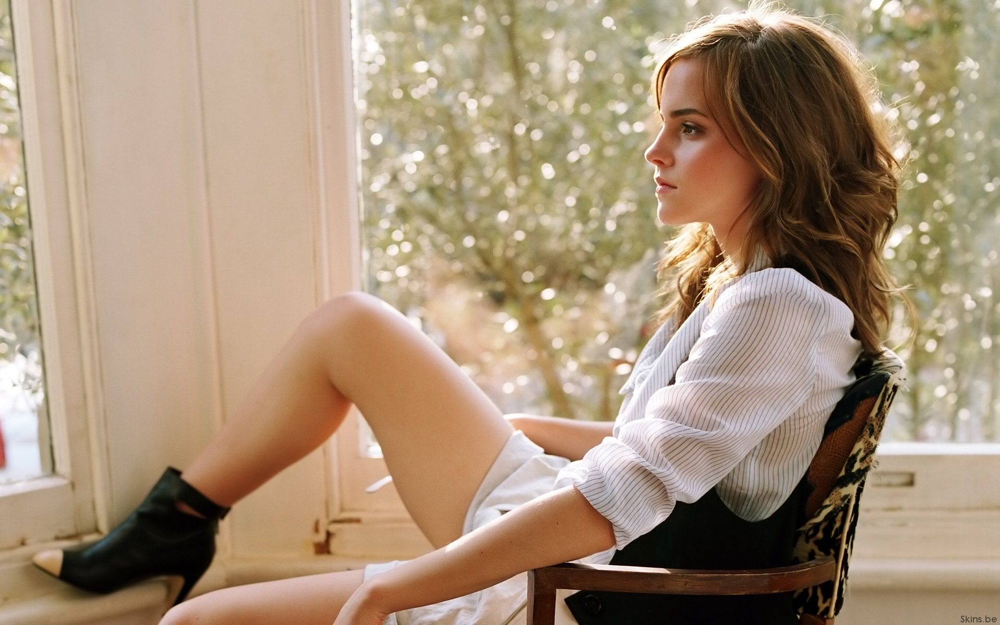

|
Hija de los abogados británicos Jacqueline Luesby y Chris Watson,8 ambos graduados de la Universidad de Oxford,9 Emma Charlotte Duerre Watson nació en París (Francia), donde vivió hasta la edad de cinco años, cuando sus padres se divorciaron y ella se mudó con su madre y su hermano menor, Alex, a Oxford (Inglaterra).810 Watson y su hermano pasaban los fines de semana en casa de su padre en Londres.11 También tiene un hermano llamado Toby y dos hermanas llamadas Nina y Lucy, ambas gemelas, frutos del segundo matrimonio de su padre.9 Después de haber vivido una época de su vida en Francia, Watson habla un poco de francés, aunque no tan bien como antes.12 Antes de comenzar la escuela, Emma fue diagnosticada hiperactiva (TDAH). Ella toma Ritalin desde entonces. |
| En el año 2000 comenzaron los castings para Harry Potter y la piedra filosofal,1819 la adaptación cinematográfica del superventas homónimo de la novelista británica J. K. Rowling.20 La principal preocupación de los directores de casting era encontrar a los actores adecuados para interpretar los papeles del trío protagonista: Harry Potter y sus dos compañeros Hermione Granger y Ron Weasley, sus dos mejores amigos. Los encargados del casting encontraron a Watson mediante su profesora de teatro en Oxford y los productores quedaron gratamente impresionados por la confianza que tenía la joven en sí misma.20 Tras ocho audiciones, el productor David Heyman les comunicó a Watson, Daniel Radcliffe y Rupert Grint, que habían sido seleccionados para interpretar a los personajes protagónicos Hermione Granger, Harry Potter y Ron Weasley, respectivamente. La autora de la novela, Rowling, ya había mostrado su apoyo hacia Watson desde que vio su primera prueba |  |
|  | El debut de Watson como Hermione Granger llegó en 2001, con el estreno de Harry Potter y la piedra filosofal. La película batió récords de taquilla durante su primer fin de semana, siendo la producción más taquillera de ese año2122 y batió récords de mayor recaudación en un día de estreno ($ 31,6 millones) y de mayor recaudación en un fin de semana ($ 93,5 millones) en los Estados Unidos, y fue la película más taquillera del año con un ingreso global de $ 974,8 millones.2324 La crítica elogió, mayoritariamente, el trabajo del joven trío protagonista, haciendo hincapié en la interpretación de Watson. El periódico inglés The Daily Telegraph describió su trabajo como «admirable»,25 e IGN afirmó que «se adueñó de la función».26 Watson fue nominada a cinco premios por su trabajo, y logró el Young Artist a la Mejor interpretación juvenil-Protagonista (Young Artist Award for Leading Young Actress). |